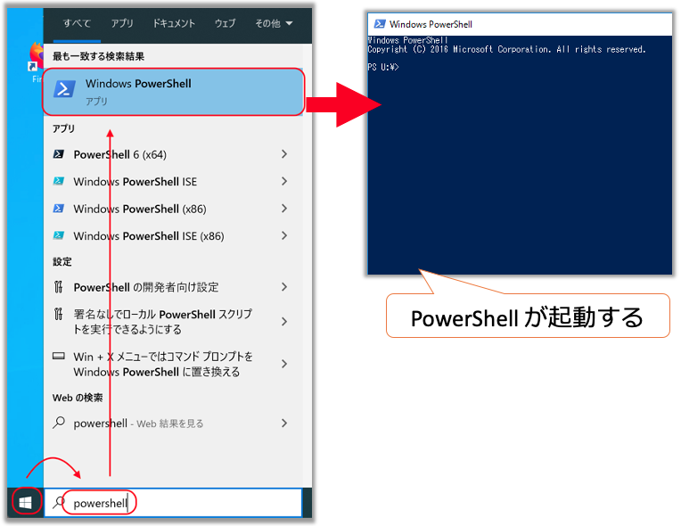
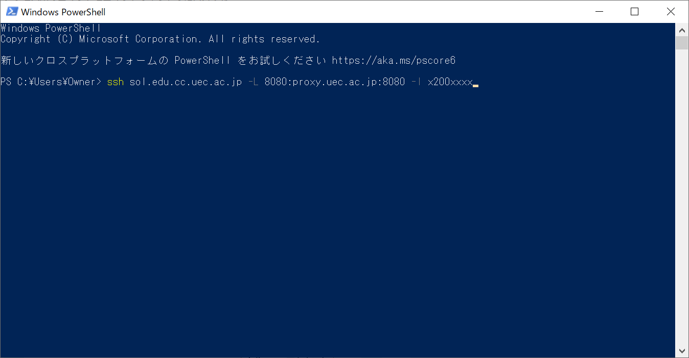
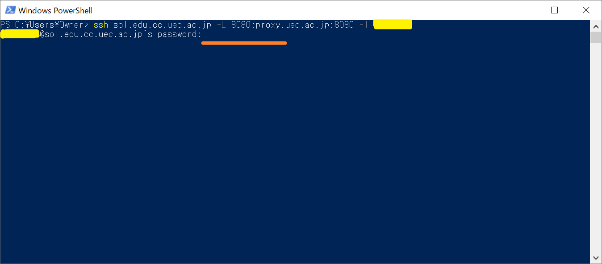
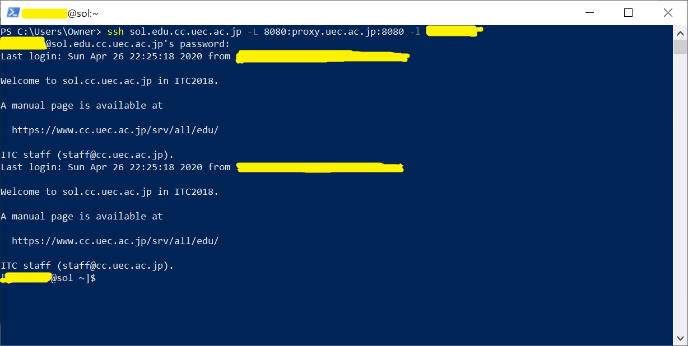
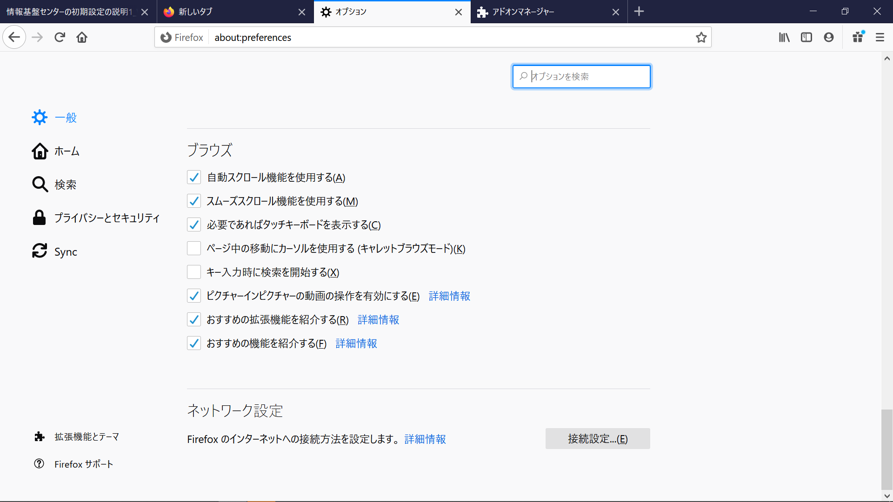
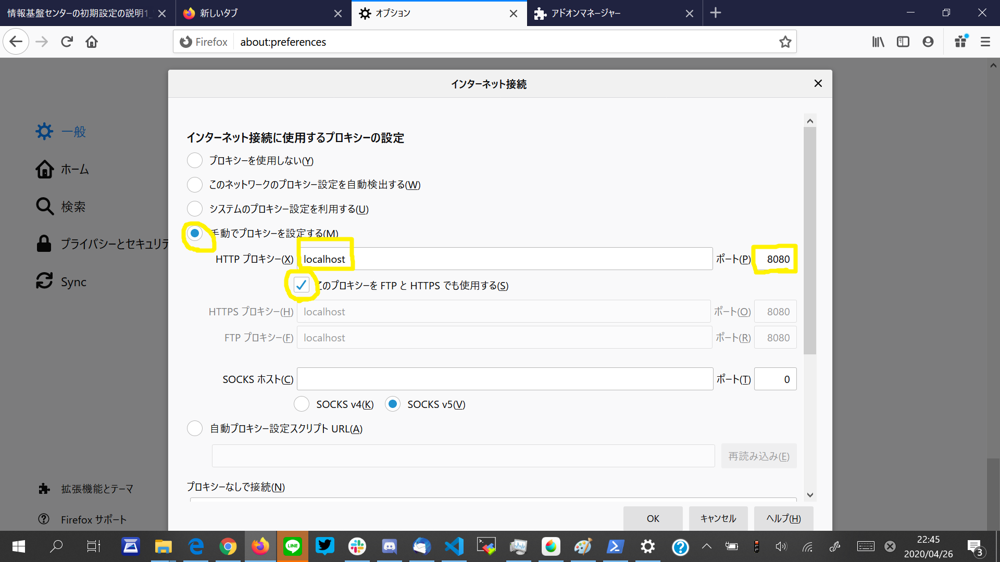
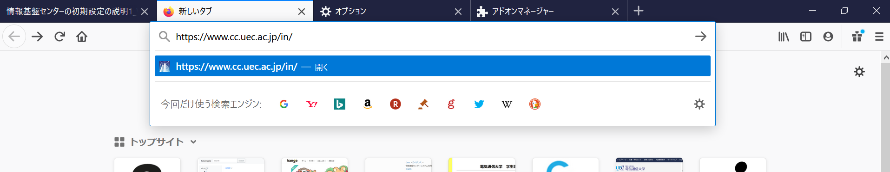
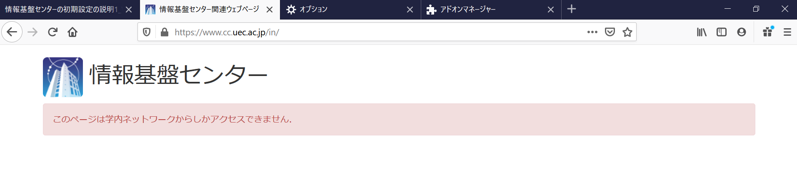

Lunatic電通生もっちゃんの部屋
STEP 2-1 PowershellでWebブラウザに学内専用サイトを閲覧する設定をする
「学外」からアクセスしている人向けの情報になります。「学内」アクセス中の人は飛ばしてください。
（引用：情報基盤センターHP）Windows 10の方は、スタートボタンの横の「検索」から「Powershell」と検索して、「Windows PowerShell」（無印）を選択してください。

次に、以下のコードをコピー＆Powershellにペーストしてください。コピーは範囲を選択して「Ctrl＋C」、ペーストは「Ctrl＋V」です。
ssh sol.edu.cc.uec.ac.jp -L 8080:proxy.uec.ac.jp:8080 -l x20xxxxx
ペーストしたあとに、「x20xxxxx」を自分のUECアカウントにしてください。そして、「Enter」を押してください。
この後に、何か文章が出てきて「yes/no」ときかれたら、「Yes」と入力して「Enter」を押してください。
次にパスワードを入力します。初期パスワードを入力し、終わったら「Enter」を押してください。この時に画面には何も表示されないので注意してください。
このような画面が出てきたら成功です。（Last Loginは出てこない人もいます）。
この画面をひらいたままにしておきましょう。
次に、Step 1でインストールした「Firefox」を立ち上げます。
「右上の三 ⇒ オプション ⇒ 一般」を選択し、一番下にある「接続設定」をクリックします。
上の画像の黄色の印を手がかりに入力をお願いします。
- 「手動でプロキシを設定する」にチェック
- HTTPプロキシ欄に「localhost」と入力
- ポート欄に「8080」と入力
- その下の「このプロキシーを FTP と HTTPS でも使用する(S)」にチェック

そして、https://www.cc.uec.ac.jp/in/にアクセスしてください。
上のような画面が出たら成功です。
なお、SSHを使用しない場合は、「システムのプロキシー設定を使用する」にもどしておきましょう。
Next -> STEP 3 UEC アカウントの初期パスワードを変更する